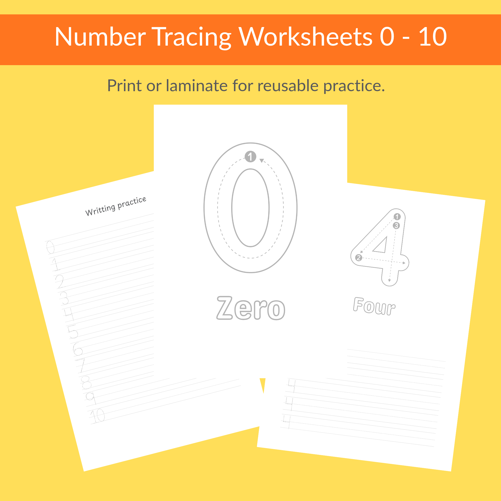

Printable Number Tracing Sheets – Numbers 0–10 (28 Pages). Support early learning with this fun, friendly set of number tracing worksheets designed for preschool, kindergarten, homeschool and classroom activities. These easy to use printables help children build number recognition, fine motor skills, and handwriting confidence. Each page includes clear tracing lines, simple layouts, and plenty of space for practice. Use crayons, markers, pencils or laminate the sheets for reusable dry erase learning. Perfect for: Preschool & kindergarten, Homeschool lessons, Math centres, Quiet time activities, Teacher filler work, Early number formation practice. What’s Included: 28 friendly, printable pages. Number tracing sheets for 0–10. Clean, simple design for easy focus. Ideal for home or classroom printing. Reusable when laminated. A great no prep resource for teachers, parents, and caregivers looking for engaging early learning activities. How to Access Your Files Once your purchase is complete, your digital files will be available instantly under Purchases & Reviews in your Etsy account. Download and start using them right away. Please Note This is a digital product only. No physical items will be shipped. Usage Terms • For personal use only • Not permitted: reselling, sharing, editing, or claiming the designs as your own Returns & Support Due to the nature of digital downloads, refunds and exchanges aren’t available.
Contact Details:
E-Mail: thepeacefullmethod@gmail.com